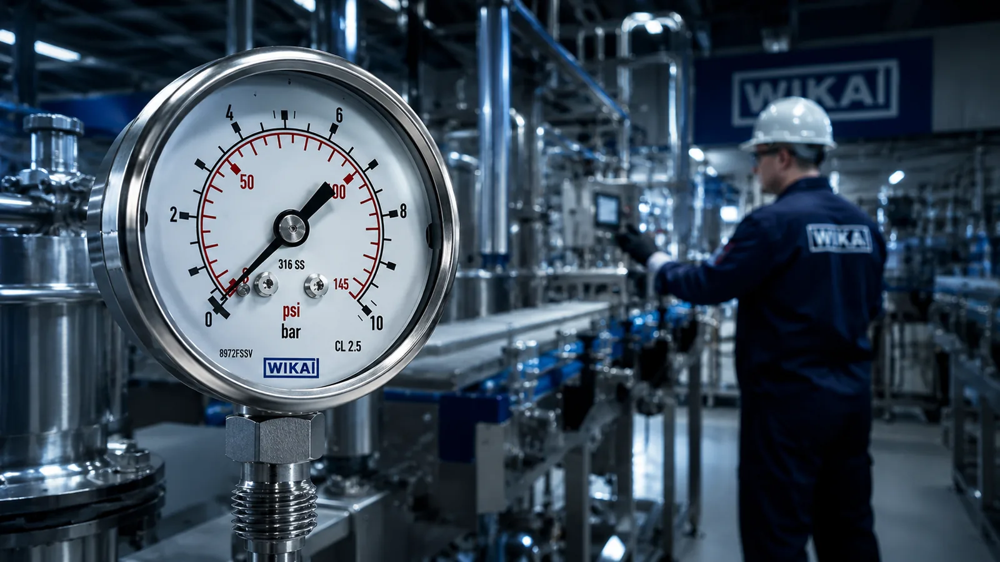
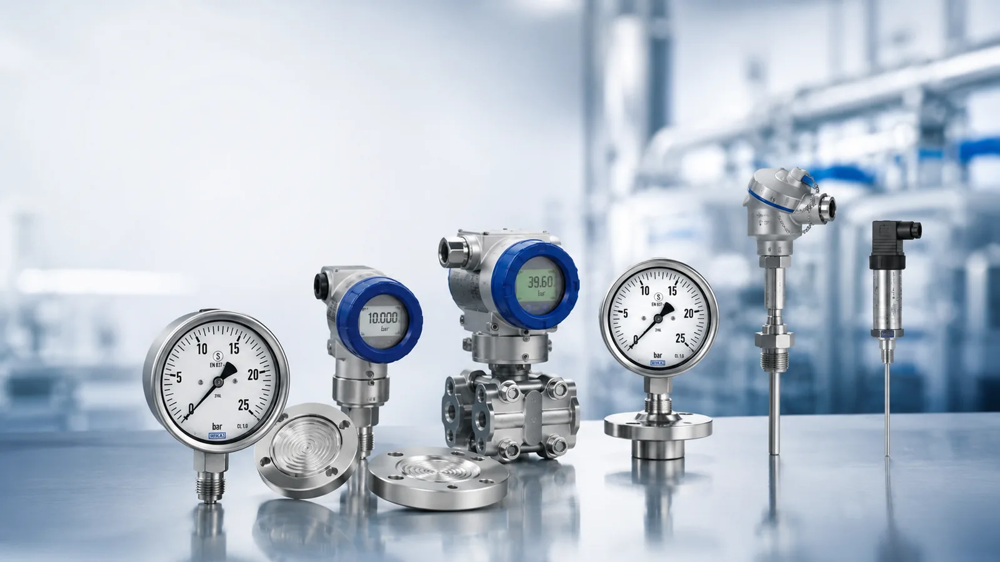
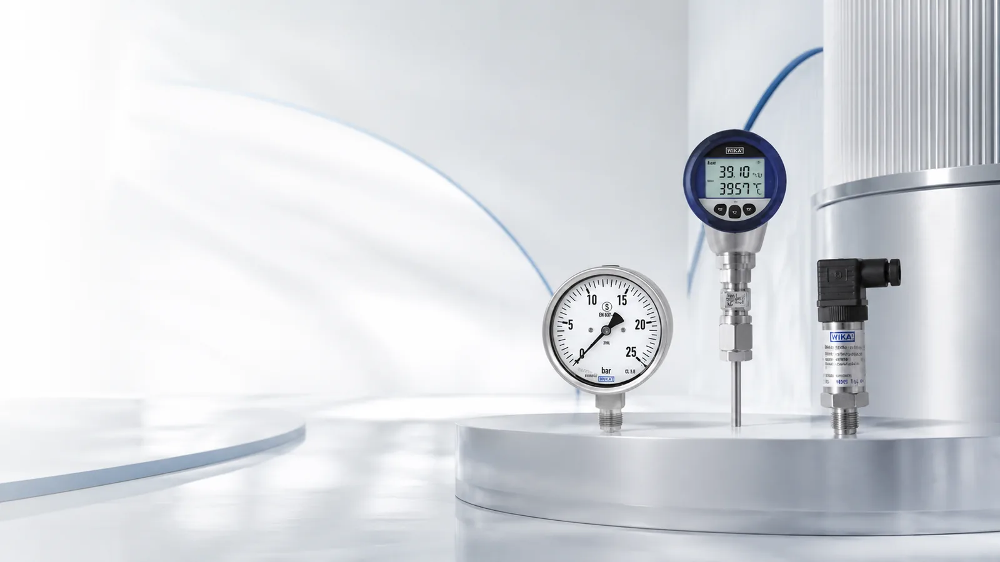
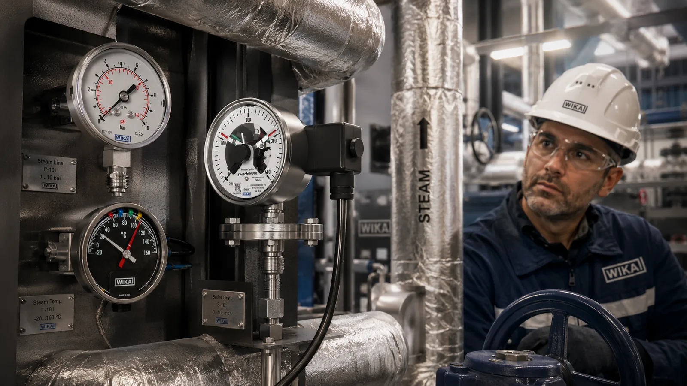
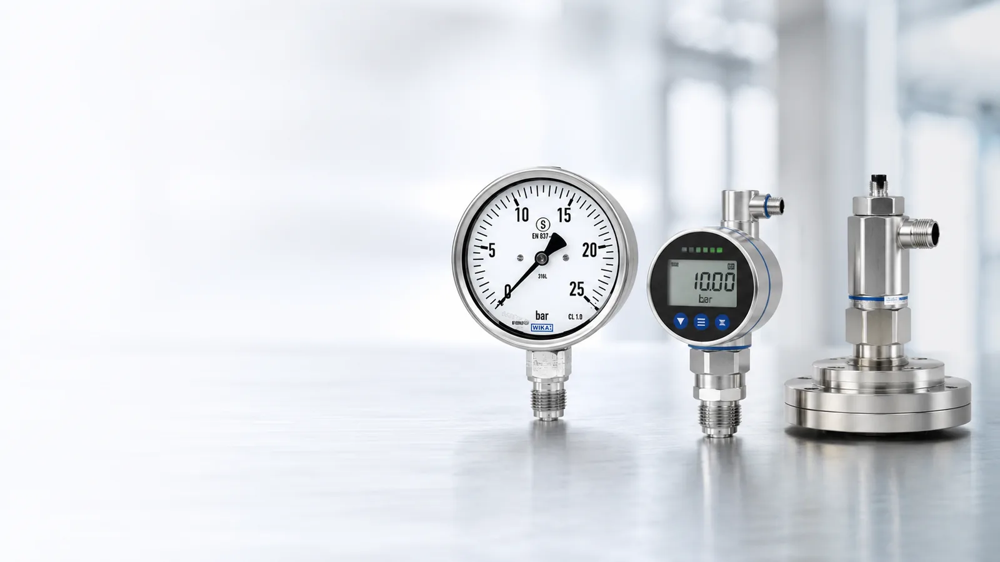

Đồng Hồ Áp Suất WIKA Là Gì? Cấu Tạo, Nguyên Lý Bourdon & Cách Chọn
Tìm hiểu đồng hồ áp suất WIKA: cấu tạo, nguyên lý ống Bourdon, phân loại, cấp chính xác và cách chọn dải đo, Ø mặt, ren. Fast Grou
Tổng hợp 34 bài viết giúp bộ phận mua hàng và kỹ thuật chọn đúng đồng hồ áp suất, cảm biến, công tắc, thiết bị đo nhiệt độ và phụ kiện WIKA – kèm cách tra part number và mua WIKA chính hãng.

Tìm hiểu đồng hồ áp suất WIKA: cấu tạo, nguyên lý ống Bourdon, phân loại, cấp chính xác và cách chọn dải đo, Ø mặt, ren. Fast Grou
So sánh đồng hồ áp suất dầu glycerin và đồng hồ khô WIKA: chống rung, chống xung áp, môi trường sử dụng và cách chọn. Fast Group –
Safety pattern pressure gauge (S3) theo EN 837-1 là gì, cấu tạo vách ngăn an toàn và khi nào bắt buộc dùng trong dầu khí. Fast Gro
Hiểu cấp chính xác đồng hồ áp suất (accuracy class) 1.0, 1.6, 2.5 theo EN 837-1 và cách chọn dải đo tối ưu. Fast Group – đại lý cu
Đồng hồ áp suất có tiếp điểm (contact gauge/Kontaktmanometer) WIKA là gì, nguyên lý tiếp điểm và cách đấu điều khiển theo ngưỡng.
Hướng dẫn chọn đường kính mặt Ø40/63/100/160 mm, kiểu chân dưới/sau và ren G¼, G½, NPT cho đồng hồ áp suất WIKA. Fast Group – đại
Hướng dẫn cách đọc part number và model code WIKA trên nameplate: dải đo, đường kính, ren kết nối, vật liệu. Gửi ảnh nameplate để
Model WIKA đã ngừng sản xuất? Hướng dẫn quy trình tìm mã thay thế (cross-reference) theo thông số kỹ thuật. Fast Group Engineering
Checklist đầy đủ thông số cần cung cấp khi hỏi giá đồng hồ áp suất, cảm biến, nhiệt độ WIKA để RFQ đúng ngay lần đầu. Fast Group E
Tiêu chuẩn EN 837-1 cho đồng hồ áp suất Bourdon tube: cấp chính xác, an toàn S1/S2/S3, dải đo, nhiệt độ. Checklist nghiệm thu cho
Hướng dẫn chọn đồng hồ áp suất, cảm biến, nhiệt độ WIKA cho dự án dầu khí O&G: vật liệu inox 316, ATEX, wetted parts, safety patte
Fast Group Engineering – đại lý cung cấp hàng chính hãng, nhà phân phối thiết bị đo WIKA (Germany) tại Việt Nam. Đủ CO/CQ, báo giá
Hướng dẫn mua đồng hồ WIKA chính hãng ở đâu tại Việt Nam, cách phân biệt hàng thật qua CO/CQ và nameplate, quy trình đặt hàng nhan
Hướng dẫn lấy báo giá WIKA nhanh trong 24h: cung cấp part number, dải đo, ren kết nối và số lượng. Fast Group Engineering – đại lý
Fast Group Engineering – nhà cung cấp thiết bị đo WIKA chính hãng cho EPC và dầu khí (O&G). Đủ CO/CQ, hỗ trợ material submittal, g

Tìm hiểu cảm biến áp suất WIKA (pressure transmitter): tín hiệu 4–20 mA, đấu dây 2-wire, độ chính xác 0.2%/0.5% span và cách chọn.
So sánh độ chính xác cảm biến áp suất WIKA 0.2% và 0.5% span (DMU-1ES vs DMUB1ES), ý nghĩa % span và cách chọn. Fast Group – đại l
Cảm biến áp suất màng phẳng (flush diaphragm transmitter) WIKA đo môi chất sệt, nhớt, dễ đóng cặn mà không tắc. Nguyên lý & cách c
Cảm biến giám sát lưu lượng (electronic flow switch/Durchflusswächter) WIKA Heavy Duty bảo vệ hệ thống làm mát, bôi trơn. Nguyên l
Sandwich display 4–20 mA và bộ hiển thị/điều khiển gắn tủ WIKA giúp đọc giá trị đo tại chỗ và điều khiển theo ngưỡng. Cách chọn. F
Temperature transmitter compact WIKA chuyển tín hiệu Pt100 (RTD) sang 4–20 mA ngay trong đầu củ cảm biến. Nguyên lý, lợi ích & các

Công tắc áp suất điện tử (electronic pressure switch) WIKA Heavy Duty: nguyên lý, cài đặt setpoint và hysteresis, output. Cách chọ

Tìm hiểu đồng hồ nhiệt độ lưỡng kim (bimetal) WIKA: nguyên lý, cấu tạo, chọn chân đứng/ngang và khi nào dùng thay RTD. Fast Group
Hướng dẫn chọn kiểu chân đứng (senkrecht)/ngang (waagerecht), bản 18 mm và chiều dài que đo cho đồng hồ nhiệt độ bimetal WIKA. Fas
Phân biệt bản Industrie và Chemie của đồng hồ nhiệt độ bimetal WIKA, chọn vật liệu inox 316 cho môi trường ăn mòn hóa chất. Fast G
Tìm hiểu cảm biến nhiệt độ Pt100 (RTD) WIKA: nguyên lý điện trở, đấu dây 2/3/4-wire, sai số class A/B và cách chọn. Fast Group – đ
Ống bảo vệ nhiệt độ (thermowell/Schutzrohr) WIKA là gì, vì sao bắt buộc và cách chọn theo áp suất, nhiệt độ, lưu tốc. Fast Group –
Nhiệt kế thủy tinh công nghiệp (machine glass thermometer) WIKA: nguyên lý, ưu nhược điểm và ứng dụng cho máy móc, HVAC. Cách chọn
Bộ điều khiển nhiệt độ gắn tủ (digital temperature controller) WIKA: nhận Pt100/TC, hiển thị số và điều khiển ON/OFF theo ngưỡng.

Van chặn đồng hồ áp suất (gauge valve/Absperrventil DIN 16270/16271) dùng để làm gì và lắp thế nào? Hướng dẫn chọn phụ kiện đồng h
Ống siphon (xi phông/Wassersackrohr DIN 16282) WIKA bảo vệ đồng hồ áp suất khỏi hơi nóng và nhiệt độ cao. Nguyên lý, dạng U/tròn &
Bộ giảm xung áp (snubber/Stoßminderer) và vorschaltfilter WIKA giảm pressure spike, chống rung kim, kéo dài tuổi thọ đồng hồ áp su
Hướng dẫn chọn gioăng, vòng đệm đồng hồ áp suất WIKA theo EN 837-1 / DIN 16258 (profile ring, flat gasket) đúng vật liệu để kín, k
Đầu nối chuyển ren (reducer/adapter) đồng hồ áp suất WIKA giúp xử lý lệch chuẩn G¼, G½, NPT khi lắp. Cách chọn đúng để kín và an t